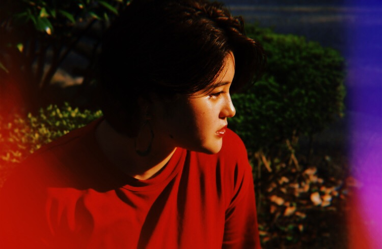
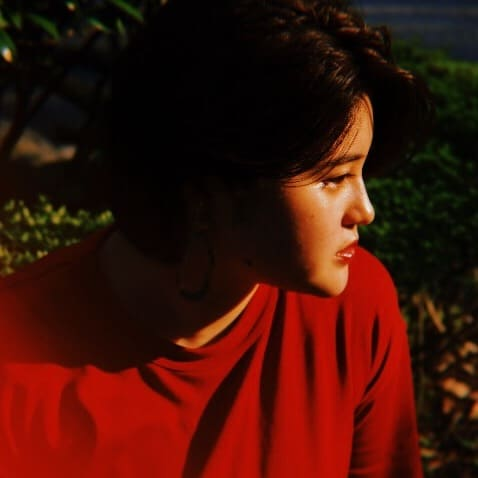

東使勇樹 / YUKI TOSHI
CALLIGRAPHER
慶應義塾大学総合政策学部在学
8歳から書道を習い始め、全国大会で二度、最高位の賞を受賞するなどその他30以上の賞を受賞。今年度は、第35回高円宮杯日本武道館書写書道大展覧会において日本武道館賞を受賞した。現在は、書道パフォーマンスや月村栄理奈とのコラボ作品、コラボパーカーなどを作成している。
また、書道を世界中の人々に届けたいというビジョンを叶えるために、昨年度、東京都主催のスタートアップコンテスト「TOKYO STARTUP GATEWAY 2018」に参加。応募総数1229件中10人のファイナリストの1人に採択された。なお、高校生で唯一ファイナリストとして採択されたことが評価され、平成30年慶應義塾塾長賞（一貫教育校）を受賞。2019年2月9日(土)に放映されたテレビ東京「出川哲朗 はじめての審査委員長 ～TOKYO STARTUP DEGAWA～」に出演。
本年度は、アイセックジャパン国際会議「文化・芸術」のアジェンダーオーナーを務めた。
t-news主催ビジネスピッチコンテストにて審査員特別賞を受賞。


月村栄理奈 / ERINA TSUKIMURA
ARTIST
青山学院大学文学部フランス文学科在学
2016
アメリカNYに短期留学帰国後、線画のアート作品制作を開始。
これより様々なジャンルの 表現方法を独学で実践(刺繍 マドレー 油絵 水彩画 など)
日本デザイナー芸術学院主催アートグランプリ2016入選(846作品中)
2017
筑波大学主催高校生アートライターグランプリ2017 優秀賞(13ヶ国551人中)
高校在学中、学内にて「CULTURE EXBITION」と題しアート作品展示会を主催
2018
高校卒業時までに制作した作品数は60以上
2019
青山学院大学文学部フランス文学科入学
東使勇樹とともに新たなアートジャンル確立を目指して共同制作を始める(書道&ART)
現在作品数80以上